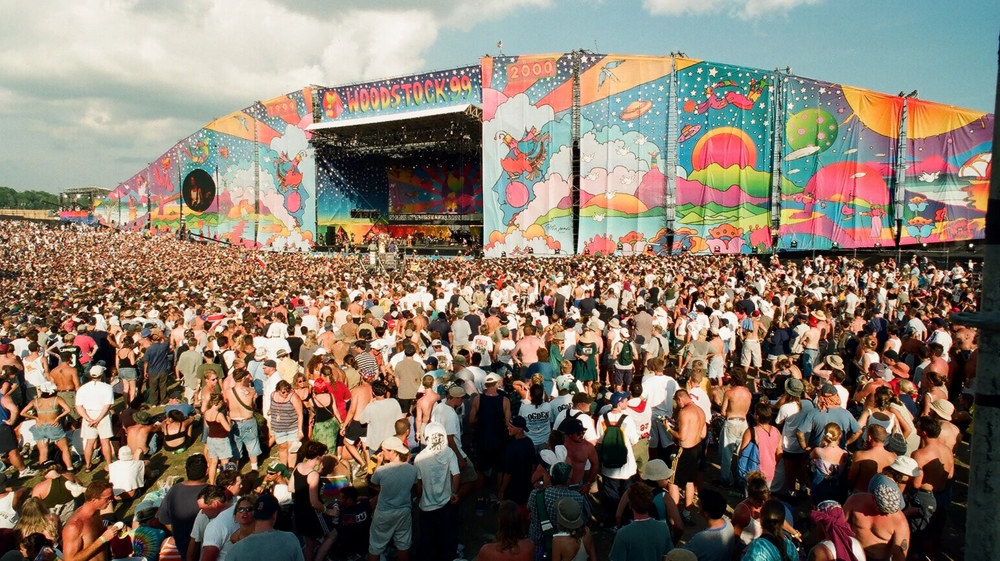
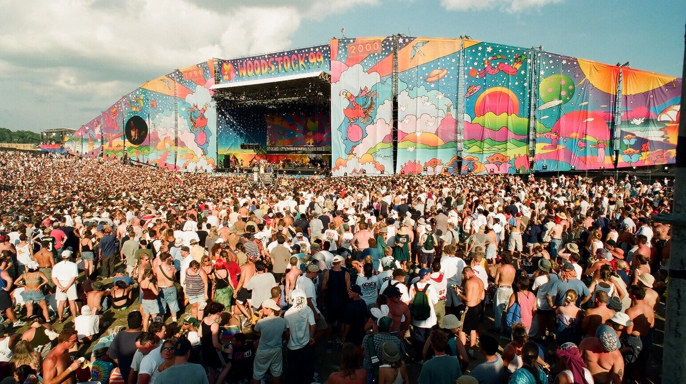
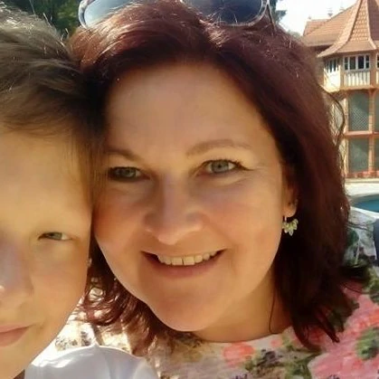

Když se všechno po*ere: Woodstock 99
 

O troskách dnes již proslulého neúspěšného festivalu Fyre byl v roce 2019 natočen zábavný dokumentární film společnosti Netflix. Ale zatímco Fyre: The Greatest Party That Never Happened byl cvičením ve schadenfreude, třídílný seriál Trainwreck: Woodstock 99 (Netflix), který zachycuje zkázonosné oživení festivalu míru a lásky z roku 1969, je mnohem temnějším portrétem vlády davu, vykořisťování a misogynie.
Trainwreck je svižný a často děsivý seriál, který účinně stupňuje napětí a buduje pocit strachu a blížící se katastrofy. Každá epizoda sleduje jeden den festivalu, od optimistického začátku v pátek až po apokalyptické scény v pondělí brzy ráno, a pomocí tikajících hodin odpočítává čas do každé nové katastrofy. Organizátoři od začátku otevřeně přiznávají, že jejich záměrem bylo vydělat co nejvíce peněz. V roce 1994 se konal další Woodstock revival, ale ploty byly prolomeny a nevydělal. Než se podařilo dát dohromady akci v roce 1999, byl kolem vyřazené letecké základny postaven osmikilometrový plot, mnoho klíčových infrastrukturních úkolů bylo levně zadáno externím dodavatelům a nezávislým prodejcům jídla a pití bylo dovoleno účtovat si za vodu a občerstvení, kolik chtěli. Bylo horko, stín byl minimální a 250 000 návštěvníků bylo stále více podrážděných.
Od začátku to vypadalo, že víkend bude nevyrovnaný. Dav byl - podle mnoha svědectví a četných dobových záběrů - machistický a agresivní, na akci převládala kultura "frat boy". Na umělkyně z davu mával kartonový nápis "Ukažte nám prsa", který si někdo dal práci vyrobit. Sheryl Crow odráží sexistické hecování s větší trpělivostí, než si publikum zaslouží. Dospívající dívky mluví o tom, že je někdo osahává a obtěžuje, zatímco osahávají dav. Až v posledních minutách posledního dílu se plně řeší jeho nejznámější a nejstrašnější dědictví - zprávy o několikanásobném znásilnění, včetně znásilnění v moshpitu - k jasnému roztrpčení některých z těch, kteří v týmu pracovali, a k upřímně děsivé obraně jiných.
Jsou zde zjevní padouši, ačkoli je sporné, zda se tak sami vidí. Je tu spousta ukazování prstem a přenášení viny z jednoho organizátora na druhého, z organizátorů na dav, z davu na organizátory. Byla to chyba nu-metalových kapel, které všechny rozvášnily, nebo bookerů, kteří nestřídali tempo vystupujících na pódiu? Byla to vina dětí, které si vykládaly staré pojmy z 60. let o volné lásce jako povolení k rabování, nebo ziskuchtivých manažerů, kteří nezajistili ani tu nejzákladnější infrastrukturu, která by mohla uklidnit 250 000 návštěvníků "sjetých jako koule"? Bylo to kvůli kulturmímu nebo životnímu prostředí? Byla to chamtivost, nebo naivita? Jeden z nejvýmluvnějších sloganů, nastříkaných na barikády, které zůstaly stát, zní: "Pryč s Profitstockem".
Tady se Trainwreck, ačkoli je do značné míry strhující, dostává na hranici svých možností. Odvádí bezvadnou práci při rozkrývání příběhu, ale neodvažuje se jít daleko pod povrch. Když set Fatboye Slima v raveovém hangáru končí za odporných okolností a on, stejně jako mnoho dalších účinkujících, se odtamtud co nejrychleji dostane, cítíte strach a rodící se paniku. Ke konci už to připomíná katastrofický film. Ale jistě se v něm dá prozkoumat víc. Největší otázkou je, proč se to zvrtlo, a proč tak zvláštním a groteskním způsobem. Proč se hudební festival, který měl stát jako prohlášení proti násilí se zbraněmi, po střelbě ve škole Columbine zhroutil do takového násilí a misogynie? Film nakonec nemá srdce jít do hloubky a místo toho sleduje adrenalinovou podívanou na požáry a nepokoje.
Když se konal Woodstock 99, byl jsem teenager a poprvé jsem četl hudební tisk. Čtení o tom, co se stalo ženám a dívkám na hudebním festivalu - jedné z věcí, které jsem chtěl dělat nejvíc na celém světě, jakmile jsem byl dost starý - bylo formativní zkušeností. Jeden z mála světlých momentů zde pochází od jedné z účastnic festivalu, Heather, které tehdy bylo čtrnáct let. Říká, že teď už si alespoň "nepřipouštíme, co se stalo... Jsem ráda, že moje dcery to nikdy nebudou muset vidět a myslet si, že to tak prostě je".
Komentáře (3)
Vladimír Šmahel@smaha8d
Velice se mě tato recenze dotkla. Našel jsem v ní velice užitečných a zajímavých informací. Prosím, pokud toto čteš, zachraň, potřebuji pomoc. Změnilo mi to život.
 Anna Štěrbová@anuska34910d
Akce jsem se sama zúčastnila, byl to bombec. Seriál je věrohodný k realitě.
Nemám stejný názor jako ty, myslím si, že seriál je velice špatný. Syn zkoukl půlku a rozbrečel se, což je pro mě negativum.